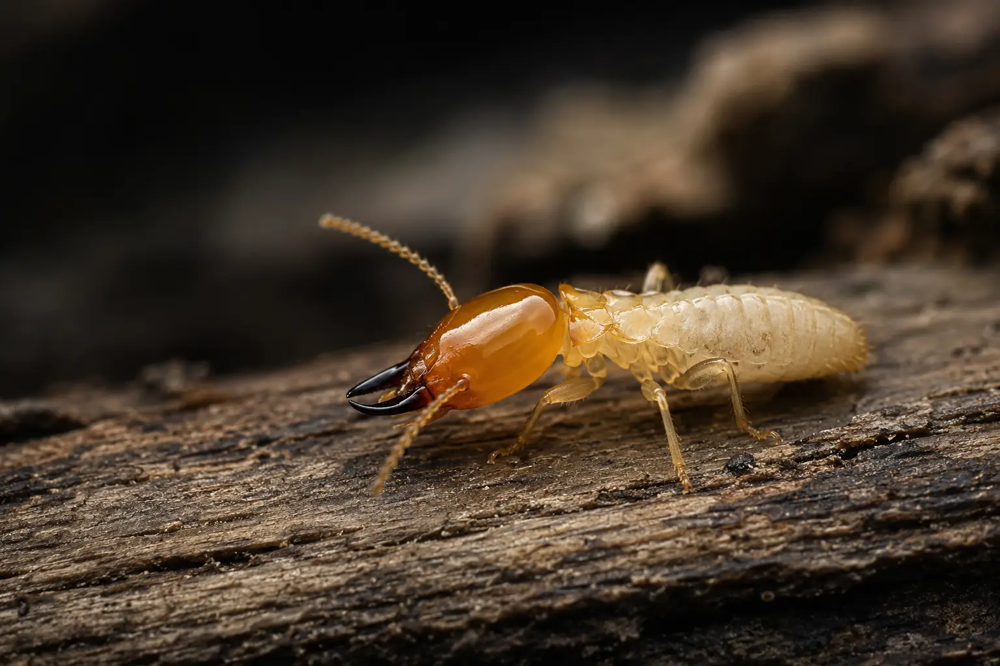

Residential & Commercial · Termite Proofing
We Protect Your Property at Every Stage, Before They Ever Get In. Whether your slab hasn't been poured yet, your build is mid-construction, or you've been living in your house for many years,our specialised termite treatment works for any stage you're at. We cover all three, with SANS-compliant certification.

Why a can of spray from the hardware store won't cut it
A termite colony can number in the hundreds of thousands, feeding timber from underground galleries and mud tubes you'll rarely see until the damage is done. These nests can be up to three meters in depth! Most off-the-shelf sprays are repellent — termites simply smell them and tunnel around the treated patch to the next untreated gap, so a spot-treated skirting board just redirects the problem a metre over instead of solving it. Our treatments use non-repellent termiticides the workers can't detect, so they carry it back through the colony themselves, combined with a continuous barrier rather than a patchwork of spot treatments — because termites only need one untreated gap to get through.
Worth checking for
Pencil-width tunnels of soil and saliva running up brickwork or foundation walls are termites' protected route between the nest and their food source.
Tapping skirting boards, door frames or roof timbers and hearing a dull, hollow knock usually means the inside has already been eaten out.
Swarmers shed their wings after a mating flight — finding small, papery wings indoors is often the first visible sign of an established nearby colony.
Termites feeding just beneath the surface leave moisture and hollow pockets behind, which can show up as blistering or slightly warped paintwork.
Timing matters
We treat the entire building footprint and foundation trenches with a continuous chemical soil barrier before concrete is poured, so termites can't reach the timber above from underneath. Carried out and certified to SANS 10400-K. This treatment carries a 10 year guarantee.
Plumbing penetrations, service entries and additional trenches opened after the initial treatment can break the original barrier. We re-treat these exposed points before backfilling, closing the gaps termites are most likely to exploit.
For existing homes with no soil barrier, or where one has broken down, we drill and inject termiticide along the foundation perimeter and do a motorised pump spray to drench the whole yard. We offer a 5 year guarantee on our termite drill treatments.
How we treat it
We confirm which stage your property is at — pre-slab, mid-build, or occupied — and identify the termite species, since treatment method and product depend on both.
Depending on the stage, we apply a continuous soil barrier before the slab, top up exposed trenches during the build, or drill and inject along an existing foundation.
For occupied homes, Drench spray around the perimeter to catch any activity the barrier misses and track the colony's collapse over time.
You receive a SANS-compliant treatment certificate — often required for occupation certificates and home loans — along with a warranty period and prevention guidance.
Good to know
Yes — a slab alone doesn't stop termites; they can enter through unsealed edges, cracks, and service penetrations. Pre-construction soil poisoning is also typically required for your occupation certificate under SANS 10400-K.
Pre-construction treats the bare soil before concrete is poured. During-construction tops up any barrier broken by plumbing or trenching work done afterward. Post-construction is for homes already built, using drilling and injection instead of soil-stage treatment.
A properly installed pre- or during-construction soil barrier is guaranteed for 10 years, and come with a warranty certificate. Post-construction treatments are backed by a 5 year guarantee for continued protection.
Not at all. Post-construction treatment is exactly built for this — drilling and injecting along the foundation is a proven, effective and long lasting solution to the problem. Most homes see a sharp drop in visible activity within 2–3 weeks, with the colony fully collapsing over the following weeks.
While you're at it
Dealing with more than one pest at once is common — ask about a combined visit.
Where we operate
We handle pre-, during- and post-construction termite treatment across Johannesburg and Pretoria. A few areas we cover regularly:
Message us on WhatsApp with your project stage and we'll recommend the right treatment, or request a free quote and we'll get back to you within one business day.